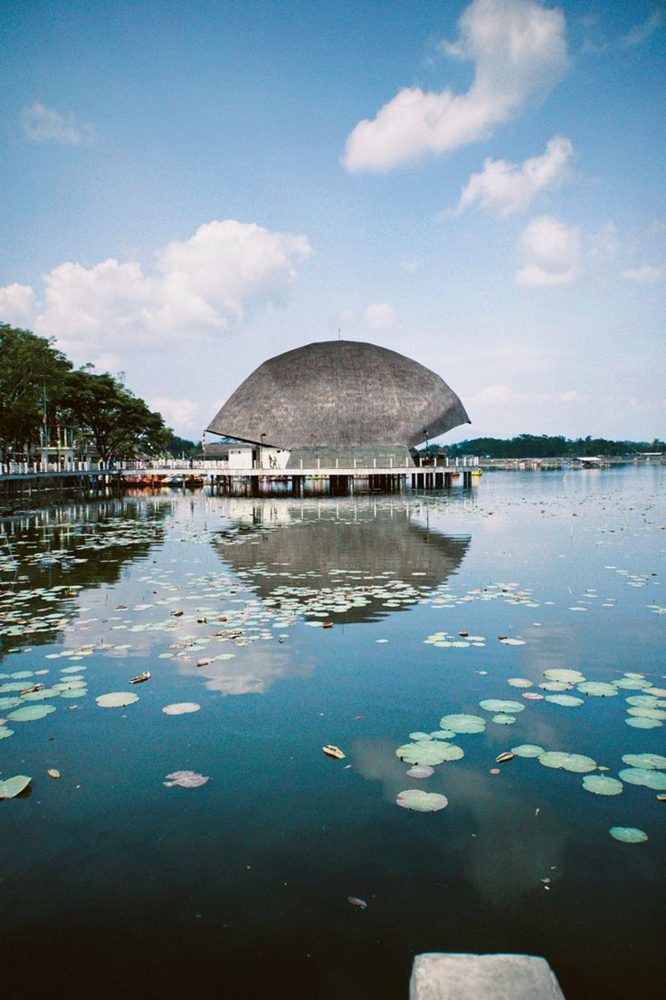
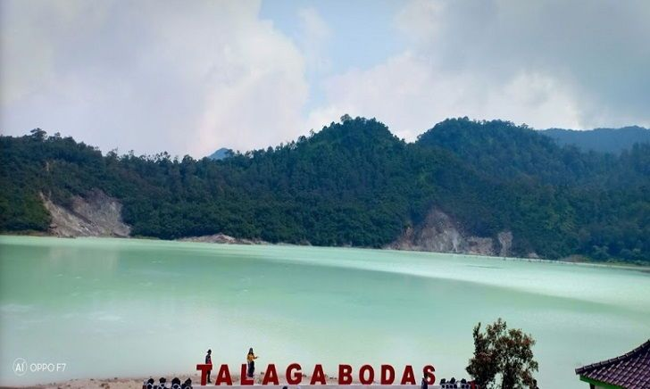
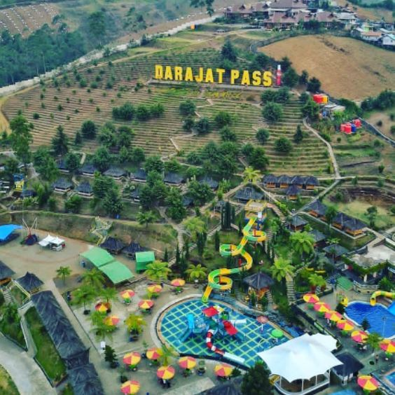
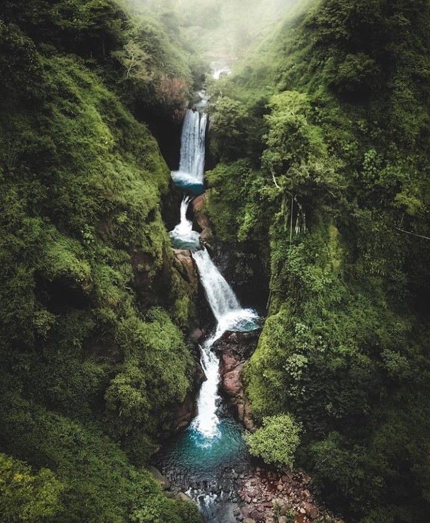

Pantai Santolo berada di Kecamatan Pameungpeuk, pantai ini dikenal dengan garis pantai yang panjang, memiliki pasir putih yang halus dan bersih. Pantai satu ini juga dikelilingi perbukitan hijau serta pemandangan tumpukan batu karang. Air di kawasan bibir pantai termasuk dangkal dan tenang, cukup aman untuk kamu yang ingin berenang. Meskipun dangkal, pantai selatan ini tetap berarus dan kamu harus hati-hati. Kamu bisa dengan mudah melihat karang berbagai bentuk dan ukuran. Jika beruntung, kamu bisa melihat ikan atau bintang laut yang terjebak di karang tersebut.
Dikutip dari agen travel, untuk menikmati indahnya Pantai Santolo, harga tiket masuk masih cukup terjangkau. Sedangkan untuk biaya parkir dan mencoba berbagai wahana seru, wisatawan ditarik tarif lain. Berikut rinciannya:
Tiket Masuk
Rp. 10.000 per orang
Sewa Banana Boat
Rp. 25.000 per orang
Sewa Perahu
Rp. 10.000 per orang
Parkir Motor
Rp. 3.000 per orang
Parkir Mobil
Rp. 5.000 per orang
Situ Bagendit

Salah satu bangunan Situ Bagendit yang disebut-sebut seperti Opera House
Situ Bagendit ialah sebuah danau di Garut yang saat ini memiliki wajah baru setelah setahun lebih mengalami revitalisasi. Meski belum diresmikan, Situ Bagendit sudah buka kembali dan letaknya berada di Kecamatan Banyuresmi.
Daya tarik utama kawasan wisata Situ Bagendit adalah danau. Kawasan ini berada dalam lingkungan alami dengan berlatar belakang pegunungan yang indah. Tempat wisata ini memiliki berbagai aktivitas wisata yang dapat dinikmati oleh wisatawan. Aktivitas yang dapat dilakukan di Situ Bagendit, seperti berlayar ke tengah situ menggunakan rakit bambu, main sepeda air, kano, memancing, dan berbagai aktivitas lainnya. Setiap tahun, Pemerintah Kabupaten Garut menggelar Festival Bagendit yang diisi dengan kesenian daerah dan berbagai lomba wisata air.
selain pemandangannya yang indah, ada sisi lain yang membuat Situ Bagendit menjadi menarik yakni cerita di balik adanya Situ Bagendit. Konon katanya Pada zaman dahulu kala, hidup seorang perempuan kaya bernama Nyai Bagendit di salah satu desa yang terletak di Jawa Barat. Nyai Bagendit hidup seorang diri dengan kekayaan melimpah dari warisan suaminya yang meninggal.
Dari kekayaan yang dimiliki, Nyai Bagendit kerap merasa takut akan jatuh miskin. Hal itu membuatnya menjadi seseorang yang kikir. Terlebih lagi, Nyai Bagendit memiliki perangai yang kurang ramah kepada warga sekitar. Nyai Bagendit akan berkenan membantu warga yang sedang kesulitan dengan catatan terdapat ganti bunga yang sangat tinggi. Kemudian, apabila warga telat membayar utang tersebut maka akan mendapat diperlakukan kasar oleh orang suruhan Nyai Bagendit dan bahkan menyita sisa kekayaannya.
Beberapa perangai buruk Nyai Bagendit pun membuatnya kerap tidak disukai oleh warga sekitar. Ditambah lagi dengan sifatnya yang senang memamerkan harta kekayaan kepada warga sekitar. Pada suatu hari, Nyai Bagendit sedang bersantai di halaman rumahnya sambil menghitung kekayaan uang dan emasnya. Kemudian datanglah seorang kakek tua yang berjalan dengan sebuah tongkat.
Kakek tersebut merupakan seorang pengembara yang meminta sedikit air minum kepada Nyai Bagendit. Namun, Nyai Bagendit menolak dan justru memaki kakek tersebut dengan kasar lantas mengusirnya. Setelah diperlakukan tidak mengenakkan, kakek tersebut merasa sedih dan kecewa. Kemudian ia menancapkan tongkatnya di depan rumah Nyai Bagendit sambil mengingatkan wanita kaya tersebut mengenai pelajaran yang akan diterimanya.
Melihat hal tersebut Nyai Bagendit tidak menghiraukan dan hanya mengejeknya dengan tertawa. Kemudian ia pun masuk ke dalam rumah untuk meninggal kakek tersebut di luar.Setelah itu, kakek tersebut mencabut tongkat yang ditancapkannya yang kemudian memancarkan air yang sangat deras. Air yang memancar tersebut menyebabkan banjir pada desa yang ditempati Nyai Bagendit. Para penduduk desa pun berlarian untuk menyelamatkan diri.
Sementara itu kakek pengembara menghilang entah ke mana. Nyai bagendit pun terlambat menyadari kedatangan banjir dan lebih memilih untuk menyelamatkan kekayaannya. Akhirnya, Nyai Bagendit pun meminta pertolongan sembari membawa sekotak uang dan emas. Naasnya tidak ada orang yang mendengar Nyai Bagendit karena warga sudah menyelamatkan diri terlebih dahulu.
Nyai Bagendit pun tenggelam bersama seluruh kekayaannya dan banjir pun semakin meluap sampai akhirnya membentuk sebuah danau. Kemudian danau atau situ tersebut diberi nama Situ Bagendit. Harga tiket situ bagendit tergolong murah karena hanya dipungut biaya Rp.20.000 saja untuk bisa memasuki kawasan situ dan Anda bisa sepuasanya berada di dalamnya.
Talaga Bodas

Kawah Talaga Bodas
Talaga Bodas Garut merupakan salah satu kawah Gunung Galunggung yang meletus ratusan tahun lalu. Suhu kawasan wisata kawah yang berada pada sisi utara gunung ini tergolong dingin. Sementara untuk waktu terbaik untuk mengunjungi tempat wisata ini adalah siang hari untuk menikmati sejuta pesona kawahnya. Lokasinya berada di Kecamatan Wanaraja.
Kawah ini berbentuk memanjang dengan pemandangan perbukitan di sekelilingnya. Banyak aktivitas wisata yang dapat dilakukan oleh wisatawan di kawasan wisata ini. Seperti treking dan hiking, berkeliling kawah, mandi di kolam air panas hingga swafoto.
Sebelum sampai di lokasi wisata, wisatawan dapat menikmati pemandangan alam yang sangat menawan. Tanahnya berbukit-bukit, dengan tingkat kemiringan tinggi dan cenderung curam. Penduduk setempat memanfaatkan kondisi tersebut dengan menjadikanya kebun sayuran, seperti kol dan tomat.
Kendaraan wisatawan hanya bisa mengakses sampai area parkir kawah Talaga Bodas. Selanjutnya perjalanan berlanjut dengan berjalan kaki sekitar 1 Km atau menyewa motor. Namun pemandangan indah dengan hutan lebat akan membuat wisatawan lebih nyaman berjalan kaki.
Sambil treking dan hiking ringan, panorama perbukitan yang mengelilingi area tempat wisata siap menemani. Selain itu suasananya pun segar dan sejuk, khas alami pegunungan. Begitu sampai di kawah segala lelah terbayar dengan pesona keindahannya.
Wisatawan yang berkunjung ke tempat wisata ini akan dikenakan biaya tiket. Harga tiket masuknya masih terjangkau. Cukup membayar Rp7.000-Rp9.500 sudah bisa menikmati keindahan objek wisata ini.
Darajat Pass

Darajat Pass dilihat dari ketinggiian
Darajat Pass yang terletak di Kecamatan Pasir Wangi ini memiliki wahana permainan berupa waterboom. Terdapat di beberapa kolam, peluncuran serta wahana air lainnya. Tak ketinggalan, wahana giant bucket yang siap menumpahkan air di bawahnya.
Kolam renang dibedakan, untuk anak-anak dan dewasa. Tentunya, kolam renang anak lebih dangkal daripada kolam milik dewasa. Selain itu, kolam renang anak lebih banyak memiliki wahana permainan. Kolam renang di sini airnya hangat, sangat cocok dengan dinginnya udara sekitar. Air panas ini berasal dari sumber mata air alami, pengaruh dari panas bumi.
Harga tiket masuk ke Darajat Pass sendiri sangat terjangkau, bagi anak-anak Rp.30.000 dan dewasa Rp.35.000. Selama perjalanan menuju Darajat Pass, pengunjung akan disuguhi pemandangan hijau yang memanjakan mata. Sawah, kebun sayuran, tidak dapat membuat mata berkedip karena takjub. Ditambah dengan pepohonan di kanan dan kiri jalan yang seolah menyambut kedatangan.
Udara sejuk dengan lembut membelai tubuh. Meski begitu, di beberapa titik pengunjung akan menjumpai uap putih yang membumbung. Ini pun tidak membuat udara di sekitar menjadi panas, tetap kesejukan yang terasa. Keindahan pemandangan seperti inilah yang membuatnya mendapat julukan “Swiss Van Java”. Seperti pemandangan hijau di negeri Swiss yang menawan.
Curug Jagapati

Curug Jagapati
Curug Jagapati adalah sebuah air terjun yang terletak di Kecamatan Cisompet. Air terjun ini terletak di kawasan pegunungan yang indah, dikelilingi oleh pepohonan hijau dan batuan alam yang menarik. Curug tersebut memiliki ketinggian sekitar 80 meter dan memiliki keindahan alam yang menarik untuk dieksplorasi. Lokasi Curug cukup terpencil dan tersembunyi.
Sehingga, untuk mencapai air terjun ini biasanya memerlukan perjalanan melalui jalan setapak dan trekking. Namun, perjalanan yang menantang ini juga menjadi daya tarik bagi para pendaki dan pecinta alam yang ingin menikmati keindahan alam yang masih alami.
Selama perjalanan menuju Curug Jagapati, pengunjung akan melewati hutan dan sungai yang asri, serta dapat menikmati keindahan pemandangan alam sepanjang perjalanan.
Setibanya di Curug Jagapati, pengunjung akan disambut oleh air terjun yang mengalir deras dan suasana yang tenang. Curug Jagapati juga memiliki kolam alami di bawah air terjun yang bisa digunakan untuk berenang atau sekadar merendam kaki. Untuk Harga tiket masuk sendiri, tergolong murah yakni hanya Rp.20.000 saja.